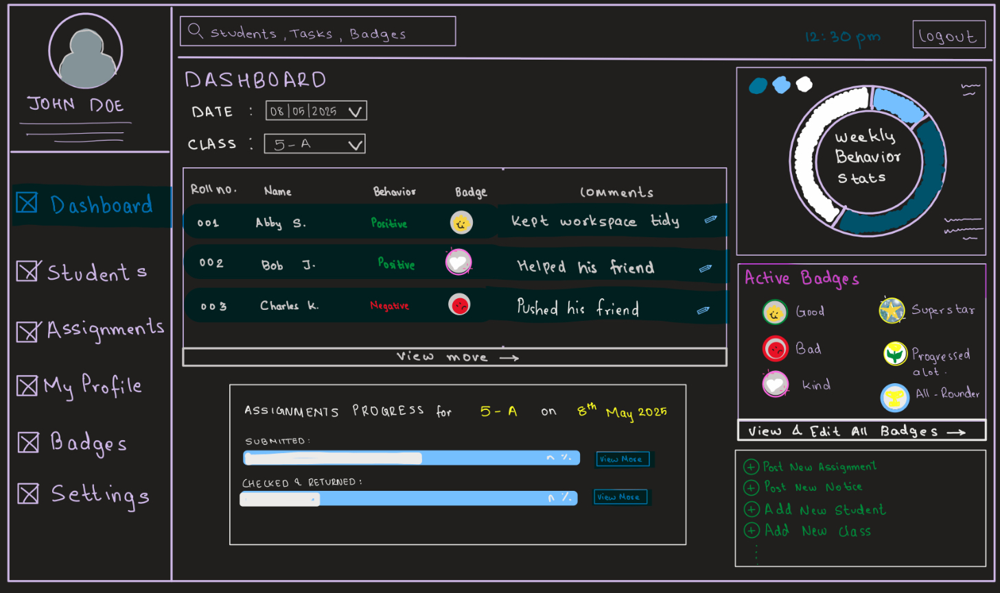

Security Projects
Real-world security work and applied cybersecurity projects.
Caught in the Act: Live WordPress Security Recovery
Shortly after joining ILM Education, I noticed something unusual on the live website: random words appearing mid-sentence, all hyperlinked to an unknown Ukrainian domain. This was not a design choice — the site had been compromised through outdated, unpatched WordPress plugins.
Investigation Methodology
1. Verified issue across multiple browsers and devices (ruled out local glitch)
2. Audited WordPress dashboard login and activity logs
3. Identified compromised entry point: outdated/expired plugins
4. Removed all malicious embedded links from the live codebase
5. Deleted all unused and expired plugins from the installation
6. Updated every active plugin to its current, patched version
7. Verified clean state across all pages post-remediation
Key Security Lesson
Outdated plugins are one of the most common WordPress attack vectors. Unpatched vulnerabilities give attackers a persistent, low-visibility entry point. Regular plugin audits are essential maintenance — not optional.
 🏆 Award Winner
🏆 Award Winner
GenRx — Security-Conscious Health Application
As the architect of GenRx — a personalised medicine recommendation platform — I designed the application with privacy-by-design principles from the ground up. Health applications handle sensitive PII (Personally Identifiable Information) and require careful thought about data minimisation, consent flows, and secure data handling.
Security Design Considerations
- · User consent and data minimisation in medical recommendations
- · Secure storage of health data via Firebase security rules
- · Privacy-first UX — no unnecessary data collection
- · Role-based access for patient vs. system interactions

Thesis ProjectBehaviour Management Module — Secure LMS Build
My final-year thesis project — a full Learning Management System (LMS) prototype built on ReactJS and Firebase — incorporated security considerations throughout the development lifecycle. As a system handling student data and educational records, securing both the data layer and the access controls was a core requirement.
Security Implementation
- · Firebase Authentication for secure user identity management
- · Role-based access control (teacher vs. student views)
- · Firebase Security Rules preventing unauthorised data reads/writes
- · Input validation to prevent injection vulnerabilities
- · Secure data architecture for sensitive student records